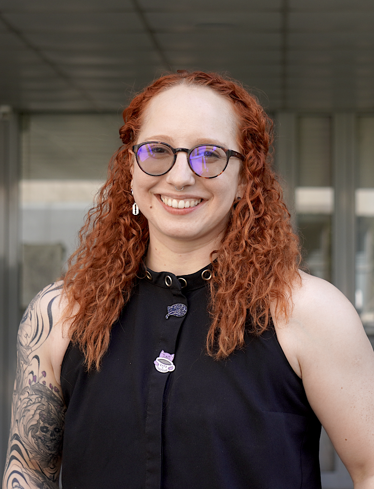

Participan en esta edición del seminario
A continuación encontrarás la lista de participantes confirmados hasta el momento.
Invitada internacional

María José Afanador Llach
María José Afanador Llach es historiadora y humanista digital. Se formó en Historia y Ciencia Política en la Universidad de los Andes (Colombia) y obtuvo su maestría y doctorado en Historia en la Universidad de Texas en Austin. Desde 2018 es profesora de Humanidades Digitales en la Universidad de los Andes y, desde 2025, dirige el Departamento de Narrativas Digitales de la Facultad de Artes y Humanidades. Su investigación aborda la historia colonial y del siglo XIX en el norte de Suramérica, integrando metodologías digitales, narrativas cartográficas y diseño de interfaces. También ha investigado sobre archivos digitales y la incorporación de la historia digital en la educación superior en América Latina.
Mesas temáticas

Alexandra Davidoff

Allison Ramay

Andrea Vera

Camila Osorio Seguel

Carla Toro
Carla Toro Fernández es subdirectora ejecutiva de Wikimedia Chile. Su trabajo se centra en ciencia abierta, reproducibilidad y datos enlazados, promoviendo el uso de infraestructuras abiertas como Wikidata para fortalecer el acceso, la transparencia y la reutilización del conocimiento académico.

Claudio Gómez
Claudio Gómez es antropólogo de la Universidad de Chile y máster en Administración Pública de la Universidad de Pittsburgh. Desde 2019, es el director ejecutivo del McClung Museum of Natural History & Culture de la Universidad de Tennessee. Entre 2007 y 2019, fue director del Museo Nacional de Historia Natural (Chile).

Eduardo Graells-Garrido
Eduardo Graells-Garrido es Profesor Asistente en el Departamento de Ciencias de la Computación de la Universidad de Chile, e Investigador Joven en el Centro Nacional de Inteligencia Artificial (CENIA). Sus áreas de investigación son informática urbana, visualización de información, e inteligencia artificial centrada en las personas.

Gabriela Arriagada
Eticista especializada en ética de la IA y datos, filosofía de la ciencia y tecnología, y ética de la discapacidad. Es profesora asistente con doble nombramiento en el Instituto de Éticas Aplicadas y en el Instituto de Ingeniería Matemática y Computacional de la Pontificia Universidad Católica de Chile (UC), además de ser investigadora del CENIA. Actualmente es directora del comité en ética de la AIGEN (Artificial Intelligence Global Education Network).

Isabella Solar
Licenciada en Artes con certificación de especialidad en Teoría e Historia del Arte por la Universidad Católica, y estudiante de Magíster en Historia Pública en la misma institución. Interesada en historia del arte, humanidades digitales, y divulgación de materia histórica, artística y patrimonial a diversas audiencias a través de varios formatos

Iván Sipirán

Javiera Rey

José Ragas

Juan Correa Parra
Juan Correa Parra es geógrafo y candidato a doctor en Geografía PUC. Su línea de investigación es sobre desigualdades socioespaciales, especialmente en zonas urbanas. Actualmente es profesor en la Escuela de Arquitectura UGM y ñoñea a diario en su Instagram Geomapas.cl haciendo mapas sobre desigualdad.

Juan Pablo Beiza

Marco Jaramillo

María José Vial

María Teresa Olivares

Pablo Osses
Pablo Osses, geógrafo y profesor asociado en la Pontificia Universidad Católica de Chile, dirige la Estación Atacama UC–Alto Patache. Reconocido por su investigación en captación de agua de niebla y planificación territorial, combina innovación pedagógica, liderazgo interdisciplinario y divulgación científica para impulsar soluciones sostenibles en regiones áridas.

Pamela Fuentes Azócar

Patricia Peña

Pía Gutiérrez

Rodrigo Mayorga

Rodrigo Sandoval

Samuel Salgado Tello
Samuel Salgado Tello es historiador y director del Centro Nacional del Patrimonio Fotográfico (Cenfoto-UDP). Especialista en historia de la fotografía, archivos y humanidades digitales, ha liderado proyectos FONDECYT, FONDART y Fondequip-ANID. Es miembro de Memoria del Mundo UNESCO-Chile y desarrolla investigación doctoral sobre fotografía y cultura visual en Chile.

Soledad Quiroz
Consultora independiente y vicepresidenta de Políticas en INGSA. Especialista en ciencia abierta, gobernanza de datos y uso de evidencia para políticas públicas.

Sylvia Dummer

Umberto Bonomo

Víctor Méndez
Víctor Méndez es arqueólogo y profesor adjunto de la Escuela de Antropología UC. Especialista en arqueología digital, coordinador del Laboratorio de Arqueología Digital, es coinvestigador del proyecto Fondecyt 1240193 “Primeros humanos del Pleistoceno Tardío en la cordillera de Los Andes: evaluación interdisciplinaria del Salar de Infieles-1 (25°S-69°O, 3.529 m.s.n.m., Región de Atacama, Chile)”.

Víctor Quezada
Es Coordinador subrogante de Memoria Chilena y Chile para niños, Biblioteca Nacional de Chile. Tiene estudios en literatura, patrimonio, archivística y gestión documental.